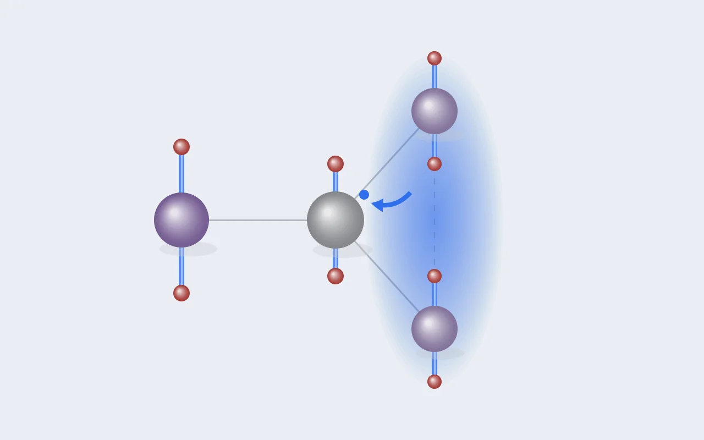

DFT 실습 [10] — Ni 하나가 전자를 가져가자, 구멍은 두 자리로 퍼졌다
실습 [9]까지는 Mn 한 원소로 계산 절차를 검증했습니다. 이번엔 연구의 진짜 대상인 "여러 전이금속이 섞인 층상 산화물"로 가는 첫걸음으로, Mn 넷 중 하나를 Ni로 바꿔봤습니다. 질문은 단순했어요. 원소가 섞이면 전하는 누가 가져가는가. 답은 두 가설 어느 쪽과도 딱 맞지 않았고, 그래서 더 많은 걸 알려줬습니다.

한 줄 요약
NaMn₀.₇₅Ni₀.₂₅O₂에서 Ni는 늘 Ni²⁺가 되어 Mn을 산화시키지만, 생긴 구멍은 Mn⁴⁺ 하나로 붙잡히지 않고 두 Mn에 반씩 퍼진다(Mn³·⁵⁺ 둘). 그 결과 얀-텔러 왜곡은 3+와 4+ 사이의 중간값을 보이고, 전자적으로는 늘어날 이유가 없는 Ni²⁺ 팔면체마저 이웃에게 떠밀려 늘어난다. 고엔트로피 조성에서 "가수"와 "국소 구조"를 어떻게 읽어야 하는지에 대한 첫 단서다.
0. 왜 Ni인가
고엔트로피 층상 산화물은 전이금속 자리에 Mn, Ni, Fe, Ti 같은 원소를 네다섯 가지 섞은 물질입니다. 원소가 섞이면 제일 먼저 정해져야 하는 게 각 원소의 가수예요. Na 하나에 전이금속 하나인 NaTMO₂에서 전이금속의 평균 가수는 +3으로 정해져 있지만, 원소마다 몇 가를 맡는지는 서로 흥정할 수 있습니다. 누가 전자를 내주고 누가 받는지가 얀-텔러 왜곡(Mn³⁺만 활성), 자성, 전압을 전부 바꾸죠. 연구 가이드의 가설 H2("저가 이온이 이웃 Mn을 산화시키고, 구멍이 어디 앉을지는 이웃 구성이 정한다")를 가장 작은 계에서 먼저 시험해본 게 이번 계산입니다. Ni를 고른 이유는 NaNi₀.₅Mn₀.₅O₂ 계열에서 Ni²⁺와 Mn⁴⁺ 조합이 잘 알려져 있어서, 계산이 알려진 화학을 재현하는지부터 확인할 수 있기 때문이에요.
1. 실험 설계: 가설 둘, 출발점 셋
실습 [8]의 16원자 슈퍼셀(Na₄Mn₄O₈)에서 Mn 하나를 Ni로 바꿨습니다. 이 셀에서는 Mn 네 자리가 대칭적으로 모두 같아서, Ni를 어디에 넣어도 같은 구조가 됩니다. 문제는 전하 장부를 맞추는 방법이 두 가지라는 점이었어요.
| 가설 | Ni | Mn 셋 | 초기 MAGMOM |
|---|---|---|---|
| A | Ni³⁺ (d⁷, 저스핀 1 μB) | Mn³⁺ 셋 | Ni 1.0, Mn 4.0 × 3 |
| B | Ni²⁺ (d⁸, 2 μB) | Mn⁴⁺ 하나 + Mn³⁺ 둘 | Ni 2.0, Mn 하나 3.0 |
실습 [8]의 교훈(전하 배치는 추측하지 말고 열거한다)대로 셋을 전부 돌렸습니다. 원소가 네 종류가 되면서 새로 신경 쓸 곳도 생겼어요. POTCAR를 Na_pv, Mn_pv, Ni_pv, O 순서로 잇고, U도 원소 순서대로 네 칸(0, 3.9, 6.2, 0 eV)이 되는데, POSCAR의 원소 순서와 하나라도 어긋나면 엉뚱한 원소에 U가 걸립니다. Ni의 U = 6.2 eV는 Materials Project가 쓰는 값으로, MP 데이터와의 호환을 유지하려고 그대로 따랐습니다.
2. 결과 ①: Ni는 어떤 출발점에서도 2+를 골랐다
세 계산 모두에서 Ni의 d 자기모멘트는 1.739 μB였습니다. 짝 없는 전자가 둘인 Ni²⁺(d⁸)의 값이에요(이론 [2]에서 모멘트로 가수를 읽던 방법 그대로입니다). 놀라운 건 Ni³⁺로 시작한 가설 A마저 Ni²⁺로 갔다는 점입니다. 초기 모멘트 1 μB로 출발했는데 이완이 끝나고 보니 1.74 μB가 되어 있었어요. 계산이 "Ni는 전자를 하나 더 가져가야 한다"고 스스로 판정한 셈입니다.
이게 무슨 뜻인지 풀면 이렇습니다. 산화물 속에서 Ni의 d 전자 준위가 Mn보다 깊은 곳에 있어서, 전자가 Mn에서 Ni로 옮겨가는 편이 에너지상 유리하다는 거예요. 그 대가로 Mn 쪽에서 전자 하나가 빠지고, 누군가는 산화되어야 합니다. 알려진 NaNi₀.₅Mn₀.₅O₂의 Ni²⁺/Mn⁴⁺ 화학과 같은 방향이라, 계산이 문헌의 화학을 제대로 재현한 첫 확인이기도 합니다.
3. 결과 ②: 구멍은 한 자리에 앉지 않았다
가설 B대로라면 Mn 하나가 4+가 되어 모멘트가 3.1~3.2 μB로 떨어져야 합니다. 그런데 결과는 달랐어요.
Ni와 b축으로 붙어 있는 Mn은 3.82 μB로 멀쩡한 Mn³⁺이고, 대각선으로 이웃한 두 Mn이 똑같이 3.645 μB로 내려갔습니다. 전자 하나만큼의 구멍이 두 자리에 반씩 퍼진 거예요. 초기값으로 4+를 한 자리에 심어줬는데도(두 출발점이 각각 다른 자리에), 두 계산 모두 이 대칭적인 상태로 모였고 에너지도 0.02 meV까지 같았습니다.
로그에도 흔적이 있었어요. 지금까지 순수 Mn 계에서는 F와 E0가 소수점 끝까지 같았는데(실습 [5]에서 배운 "절연체의 증거"), 이 계산에서는 3.5 meV 차이가 났습니다. 페르미 준위 근처에 반쯤 찬 상태가 남아 있다는 뜻이고, 전하가 한 자리에 완전히 국재화되지 않았다는 그림과 맞아떨어집니다.
이게 왜 중요한가
고엔트로피 조성을 분석하는 흔한 방식은 원소마다 가수를 정수로 배정하는 것입니다(Mn은 3+ 아니면 4+). 이번 결과는 전하 보상이 정수 단위로 딱 떨어지지 않을 수 있다는 걸 보여줍니다. 그래서 국소 특징을 설계할 때 가수는 "3+ 또는 4+"라는 범주가 아니라 모멘트 같은 연속값으로 다뤄야 해요. 다만 단서가 하나 있습니다. DFT+U가 전하를 실제보다 덜 국재화시키는 경우도 있어서, 한쪽 Mn에 전하가 붙잡힌 더 낮은 상태가 숨어 있을 가능성은 아직 배제하지 못했습니다. 한쪽으로 강하게 치우친 초기값으로 다시 확인하는 게 남은 숙제입니다.
4. 결과 ③: 얀-텔러는 가수를 연속적으로 따라간다
구멍이 반씩 퍼진 두 Mn의 팔면체는 어떻게 생겼을까요. 지금까지 모든 계산의 Mn 자리를 모멘트와 얀-텔러 크기(긴/짧은 결합 비)로 한 그림에 놓으면 이렇습니다.
두 가지가 한눈에 보입니다. 첫째, 모멘트 3.645의 Mn³·⁵⁺는 결합 비 1.07로 Mn³⁺(1.13~1.24)와 Mn⁴⁺(1.02~1.03) 사이에 정확히 떨어집니다. 얀-텔러 왜곡이 "켜짐/꺼짐"이 아니라 가수를 연속적으로 따라가는 양이라는 뜻이에요. 둘째, 가수가 같은 Mn³⁺끼리도 세로로 1.13에서 1.24까지 퍼져 있습니다. 이건 실습 [8]에서 찾은 이웃 효과(이웃한 Mn⁴⁺가 많을수록 왜곡이 줄어듦)입니다. 즉 이 그림 한 장에 가로 방향은 자기 가수, 세로 방향은 이웃 환경이라는 두 성분이 함께 담겨 있습니다.
그리고 예상하지 못한 결과가 하나 더 있었어요. Ni²⁺는 d⁸이라 e_g 두 칸에 전자가 하나씩 고르게 들어가서 얀-텔러 비활성입니다. 저는 Ni 팔면체가 거의 정팔면체일 거라고 예측했는데, 결과는 4×2.067 / 2×2.236 Å, 비 1.08로 늘어나 있었습니다.
| 자리 | d 모멘트 (μB) | Mn–O 또는 Ni–O (Å) | 긴/짧은 비 | 왜 이 모양인가 |
|---|---|---|---|---|
| Mn³⁺ (Ni와 b축 이웃) | 3.82 | 4×1.982 / 2×2.262 | 1.14 | 자기 전자(e_g¹) + 이웃이 막는 효과 |
| Mn³·⁵⁺ (Ni와 대각 이웃) ×2 | 3.645 | 4×1.992 / 2×2.139 | 1.07 | e_g 전자가 반쯤만 있음 |
| Ni²⁺ | 1.74 | 4×2.067 / 2×2.236 | 1.08 | 자기는 비활성, 이웃에게 떠밀림 |
Ni²⁺ 자신은 늘어날 전자적 이유가 없으니, 이 왜곡은 이웃에게서 떠밀린 것입니다. 주변 Mn³⁺ 팔면체들이 같은 방향으로 협동해서 늘어나 격자 전체가 단사정으로 비틀려 있고, 모서리를 공유한 Ni 팔면체도 그 틀에 맞춰 늘어날 수밖에 없어요. 사실 전조가 있었습니다. 실습 [8]에서 Mn³⁺에 둘러싸인 Mn⁴⁺도 비가 1.03으로 살짝 늘어나 있었거든요. 더 크고 무른 Ni²⁺라서 그 효과가 크게 드러난 겁니다.
팔면체 모양의 세 성분
지금까지의 결과를 모으면, 한 팔면체의 모양은 세 가지가 합쳐진 결과로 볼 수 있습니다. ① 자기 전자: e_g 칸이 불균등하게 찼는가(Mn³⁺ 1.24, Mn⁴⁺ 1.02). ② 이웃이 막는 효과: 옆에 쪼그라든 고가 이온이 몇 개인가(Mn⁴⁺ 이웃 4개면 1.14). ③ 이웃이 전해주는 변형: 주변 팔면체가 얼마나 늘어나 있나(Ni²⁺ 1.08). 이 셋을 구분하지 않으면 Ni²⁺(1.08)와 Mn³·⁵⁺(1.07)를 왜곡 크기만으로는 가려낼 수 없습니다. 그래서 해석 가능한 특징을 설계할 때 왜곡 지수는 원소별로 나눠 보고, 모멘트 같은 전자 상태 지표와 짝으로 써야 합니다.
5. 결과 ④: Ni 스핀은 Mn과 반대를 좋아한다
가설 A(Ni³⁺ 출발)의 계산은 Ni²⁺로 가면서 Ni의 스핀까지 Mn과 반대 방향으로 뒤집혔습니다(셀 합계 mag가 13이 아니라 9). 이 두 스핀 상태의 에너지를 비교하면:
| 단계 | Ni ↑ (Mn과 평행, mag 13) | Ni ↓ (Mn과 반평행, mag 9) | Ni ↓ − Ni ↑ |
|---|---|---|---|
| 1차 이완 | −94.616165 | −94.640841 | −24.7 meV/셀 |
| 2차 이완 | −94.600559 | −94.625082 (미수렴) | −24.5 meV/셀 |
| 최종 (Ni ↓는 3차) | −94.600559 | −94.625170 | −24.6 meV/셀 |
세 번 모두 같은 값이라 이 차이는 믿을 만합니다. 다만 이건 Mn끼리의 스핀은 전부 평행(FM)으로 고정하고 Ni 하나만 뒤집어본 비교예요. 실습 [9]에서 Mn–Mn은 b축으로 반평행을 강하게 선호한다는 걸 봤으니, 이 계의 진짜 바닥 자기 배열을 말하려면 Mn까지 포함한 스핀 샘플링이 필요합니다.
6. 사고 보고: 스핀이 뒤바뀌고, 계산이 멈췄다
1차 이완에서 부피가 4.2% 줄었으니 실습 [6]의 규칙대로 2차 이완을 돌렸습니다. 그런데 두 가지 일이 벌어졌어요.
하나, 두 폴더의 스핀 상태가 서로 바뀌었습니다. 1차에서 Ni ↓로 끝난 계산은 2차에서 Ni ↑로, Ni ↑로 끝난 계산은 Ni ↓로 갔어요. WAVECAR를 지우고 새로 시작하면 초기 스핀은 INCAR의 MAGMOM에서 다시 출발하는데, 두 폴더 모두 MAGMOM의 Ni가 +(위쪽)로 적힌 원래 값 그대로였기 때문입니다. SCF가 경로에 따라 Ni 스핀을 한 번은 위로, 한 번은 아래로 정해버린 거죠. Ni 스핀 방향이 그만큼 쉽게 뒤집히는 부드러운 자유도라는 뜻이기도 합니다.
둘, Ni ↓ 상태의 계산이 ZBRENT 에러로 멈췄습니다. MAGMOM에 Ni를 −2.0으로 명시해 다시 돌렸는데도 똑같이 20스텝에서 멈췄어요. 원인은 첫 스텝에 있었습니다.
구조는 1차에서 이미 거의 수렴한 상태였으니, 첫 스텝의 1.9 eV 차이는 원자 위치가 아니라 전자가 d 오비탈을 채운 방식이 틀렸다는 뜻입니다. DFT+U는 d 오비탈의 점유 방식에 따라 에너지가 다른 준안정 상태를 여러 개 가질 수 있는데, WAVECAR 없이 새로 시작하면서 높은 쪽에 떨어진 거예요. 그 뒤 도중에 바닥 상태로 떨어지면서 에너지가 불연속으로 바뀌었고, 에너지 골짜기를 앞뒤로 좁혀가며 가두는(bracketing) 원자 이동 알고리즘(IBRION = 2)이 그 점프를 감당하지 못해 ZBRENT 에러가 났습니다.
해법은 간단했습니다. 1차 이완의 WAVECAR를 읽어서 시작하는 것. VASP는 셀이 조금 바뀌어도 기존 파동함수를 새 기저에 옮겨 담을 수 있어서, 기저를 새로 짜는 2차 이완의 목적(Pulay 보정)은 그대로 살리면서 전자는 처음부터 바닥 상태에 둘 수 있어요. 그렇게 돌린 r3는 첫 스텝부터 −94.625 eV, mag 9.0이었고, 두 스텝 만에 최대 힘 0.012 eV/Å로 수렴했습니다. 이후 24원자 다성분 계산 열 건에도 같은 규칙을 적용했는데, 첫 스텝 차이가 전부 0 meV였습니다.
7. 이 결과가 의미하는 것
작은 계산 하나지만, 본 연구를 위해 정해야 할 것 네 가지가 여기서 나왔습니다.
- 가설 H2의 첫 근거. 저가 이온(Ni²⁺)이 이웃 Mn을 산화시킨다는 것, 그리고 구멍이 어디에 얼마나 앉을지는 이웃과의 위치 관계(b축 이웃은 3+로 남고 대각 이웃 둘이 나눠 가짐)가 정한다는 것.
- 가수는 연속값으로. 전하 보상이 정수로 떨어지지 않을 수 있으니, 특징에서 가수는 모멘트로 읽습니다.
- 왜곡 지수는 원소별로, 모멘트와 짝으로. 팔면체 모양은 자기 전자, 이웃의 억제, 이웃이 전하는 변형의 합이라, 왜곡 하나만으로는 이온을 판정할 수 없습니다.
- 계산 절차의 안전장치. +U 계산에서 2차 이완은 1차 WAVECAR를 읽어 시작하고, 첫 스텝 에너지를 1차 최종값과 비교해 수 eV 차이가 나면 준안정 상태를 의심합니다. 수백 개 조성을 돌릴 본 계산에서 이런 사고를 자동으로 걸러내는 게 결과 장부의 "첫 스텝 차이" 열입니다(실습 [11]).
이날 배운 것들
- 원소가 섞이면 가수는 흥정된다. Ni는 어디서 출발해도 2+를 골랐고, 그 대가는 Mn이 치렀다.
- 구멍은 반씩 나뉠 수 있다. Mn³·⁵⁺ 둘, F와 E0의 3.5 meV 차이가 그 흔적이다. 국재 상태가 숨어 있는지는 숙제로 남았다.
- 얀-텔러는 가수를 연속적으로 따라가고, 이웃에게서도 전해진다. Mn³·⁵⁺ 1.07, Ni²⁺ 1.08.
- 초기값은 판결이 아니지만, 2차 이완에서는 씨앗이 중요하다. MAGMOM만으로 새로 시작하면 스핀이 뒤집히거나 준안정 상태에 떨어진다. 1차 WAVECAR를 읽어 시작한다.
- ZBRENT 에러는 알고리즘 탓이 아닐 수 있다. 이완 도중 전자 상태가 바뀌어 에너지가 불연속이 되면 난다.
다음. Ni 하나로 원소가 섞이는 문을 열었으니, 다음은 네 원소(Mn, Fe, Ni, Ti)가 섞인 조성입니다. 그 전에 풀어야 할 문제가 있어요. 배열의 경우의 수가 셀을 키울수록 폭발하니, 전부 DFT로 계산할 수 없습니다. 실습 [11]은 그 문제를 풀 도구, 기계학습 원자간 퍼텐셜(CHGNet)을 시험하는 이야기입니다.

Seok
연구하면서 개발합니다. 배터리 재료를 원자 단위에서 계산하는 법을 바닥부터 배우는 중입니다. → 글 더 보기